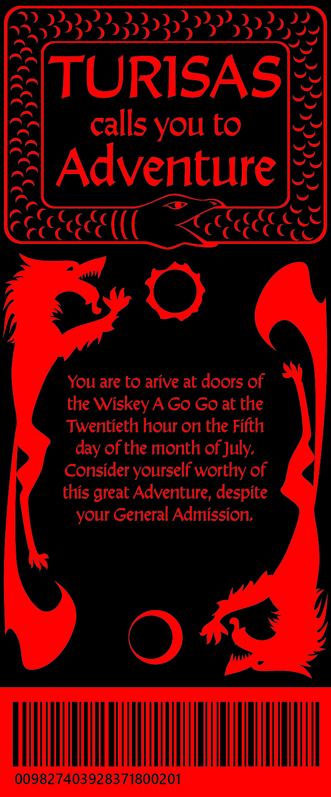

The goal of this project was to create a cohesive brand for an a bands new album and related tour. This involved designing a vinyl album cover, poster, ticket, and t-shirt. I chose to do a Finnish Folk Metal band called Turisas, that has a norse fantasy image. I decided to make the feel of the branding for this tour more fantastical than they've had previously, by including magic and monsters.

I designed this image to show a faceless protagonist journeying through a unkown land coming across a specter in the night. I was attempting evoke fear and the overwhelming feeling of being lost, as well as a bit of magic and mystery.

The front of the album shows the same protagonist approching two anthropomorphic animal people on a mountain top. I was again evoking the feeling of mystery and magic, but with more of a suprised feeling, and not outright fear. Possibly even hope.

The back is a close up of the specter seen on the poster to tie the narative of the poster to the album.
While not directly related to the imagery in the other peices, the ticket still connects to the overall theme by evoking norse mythology, with the world serpant and wolves chasing the sun and moon.